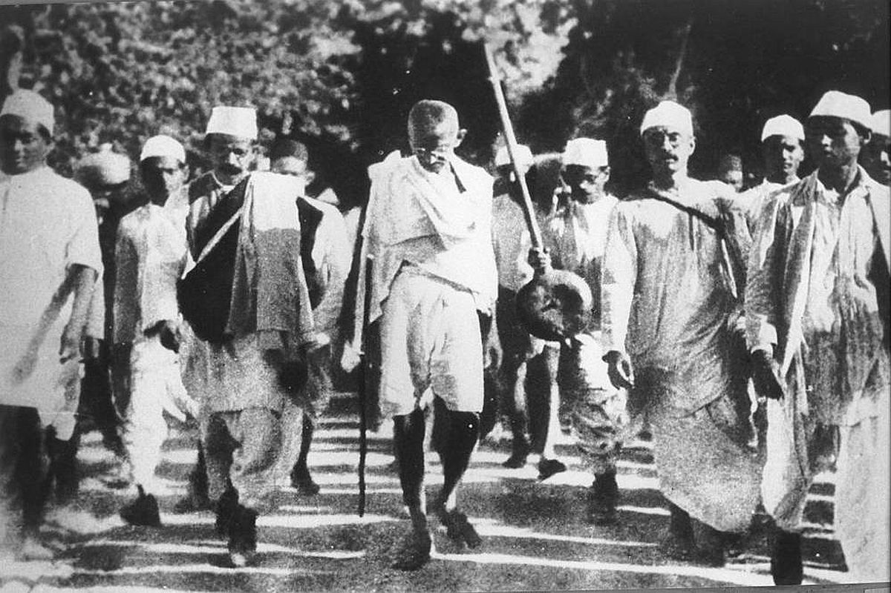

Mahatma Gandhi
The man who led India's struggle for Independence

Mahatma Gandhi during the Dandi March in March 1930.
Here's a time line of Mahatma Gandhi's life:
- 1869 - Born on 2nd October which is recognised as International Day of Non-Violence. His was named Mohandas Karamchand Gandhi and was later called Mahatma Gandhi meaning "Great soul" by the people who viewed him as India's national and spiritual leader.
- 1882 - Gandhi, only 13 years old, marries Kasturba Kapadia, who is also 13. Kasturba will later participate in a number of her husband’s civil disobedience campaigns.
- 1888 - Gandhi studies law in London. He is introduced to the Bible and to the Bhagavadgita, which he reads for the first time in its English translation by Sir Edwin Arnold.
- 1893 - Gandhi takes a job with an Indian law firm in South Africa, where he is quickly exposed to the racial discrimination practiced there. He settles in Durban and begins to practice law. In 1894 he founds the Natal Indian Congress to agitate for Indian rights.
- 1906 - A discriminatory law is passed in the Transvaal region of South Africa forcing all Indians to register with the provincial government or else face punishment. Under Gandhi’s leadership the Indian community takes a pledge to defy the law and to suffer all the penalties resulting from its defiance. This practice becomes known as satyagraha, a technique for redressing wrongs through inviting, rather than inflicting, suffering, for resisting adversaries without rancor, and fighting them without violence.
- 1915 - Gandhi returns to India and in 1919 he becomes a leader in the Indian National Congress political party. He campaigns for swaraj, or “self-rule.” In 1920 he launches a noncooperation campaign against Britain, urging Indians to spin their own cotton and to boycott British goods, courts, and government. This leads to his imprisonment from 1922 to 1924.
- 1930 - Gandhi leads tens of thousands of Indians on a 240-mile (385-kilometer) march to the sea to collect their own salt. The march is a protest against a British tax on salt and results in 60,000 people being arrested.
- 1942 - Gandhi, who in 1934 had resigned as leader and member of the Indian National Congress, becomes politically active again early in World War II, demanding immediate independence as India’s price for aiding Britain in the war. He is imprisoned again, from 1942 to 1944.
- 1947 - India formally achieves independence from British rule on 15 August, 1947. However, the partition of the subcontinent into India and Pakistan is a great disappointment to Gandhi, who has long worked for Hindu-Muslim unity. Rioting between Muslims and Hindus over the partition breaks out in many areas. Again Gandhi turns to nonviolence, fasting until Delhi rioters pledge peace.
- 1948 - While on his way to prayer in Delhi, Gandhi is killed by a young Hindu fanatic who has been angered by Gandhi’s efforts to reconcile Hindus and Muslims.
"Friends and comrades, the light has gone out of our lives, and there is darkness everywhere, and I do not quite know what to tell you or how to say it. Our beloved leader, Bapu as we called him, the father of the nation, is no more. Perhaps I am wrong to say that; nevertheless, we will not see him again, as we have seen him for these many years, we will not run to him for advice or seek solace from him, and that is a terrible blow, not only for me, but for millions and millions in this country."